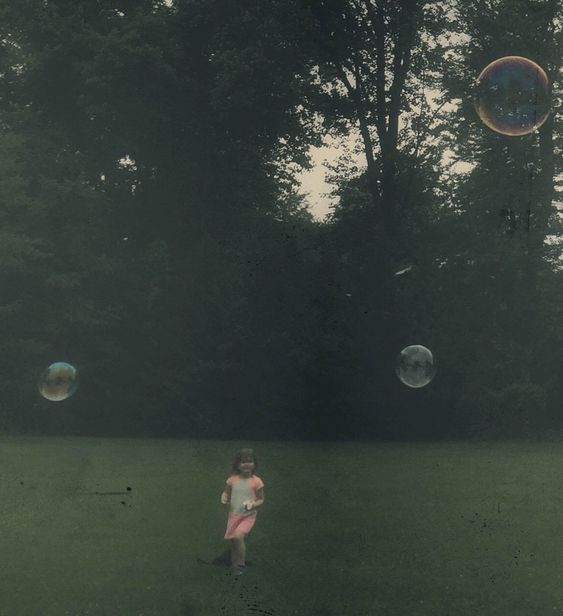
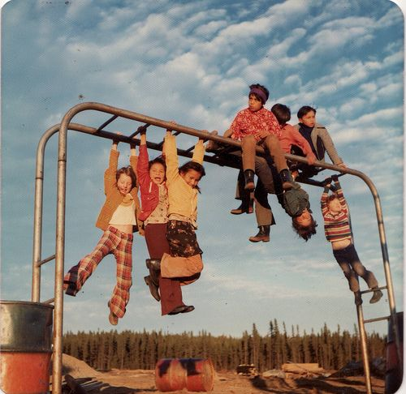
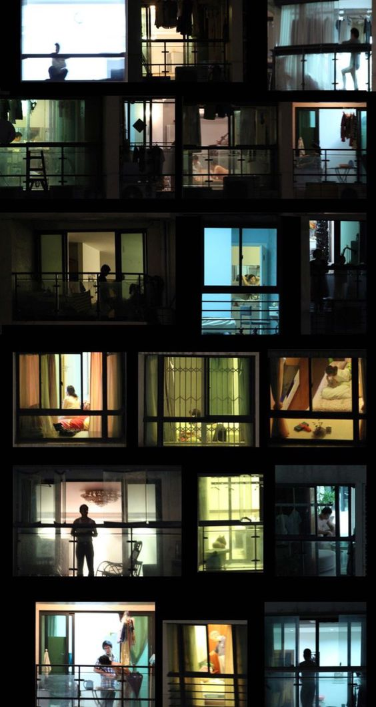
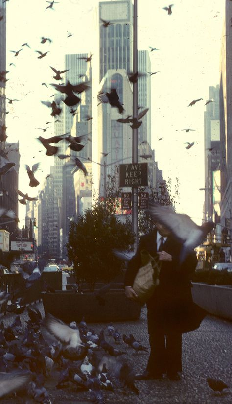
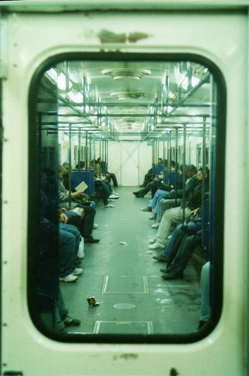

“One can't paint New York as it is, but rather as it is felt.”
- Georgia O'Keefe
“New York is made up of millions of different people, and they all come here looking for something.”
- Lindsey Kelk





“I loved New York, but I never quite felt like New York was my home either.”
– Sutton Foster
“New York was a city where you could be frozen to death in the midst of a busy street and nobody would notice.”
– Bob Dylan
“For me, New York is comfortable, not strange.”
- Karl Lagerfeld